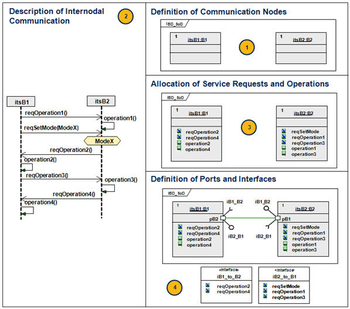

| Guideline: Service Request Driven Modeling Approach |
 |
|
Relationships
| Related Elements |
|---|
Main Description
In a service-request driven approach, the communication between blocks is based on asynchronous messages ("service requests") via SysML Standard Ports. A service request is always followed by an associated service at the receiving part – either state/mode change or operation. The approach is performed in four steps:
 |
Licensed Materials - Property of IBM |